iTest User's Guide
The PID Control dialog is the primary operator interface for switching control modes and manually changing setpoints. This dialog is a floating dialog on top of iTest Console's main window. AutomationPanel has a similar dialog. For more information regarding AutomationPanel, refer to the Mode Control Dialog documentation.
The appearance of the PID Control dialog can be modified using several powertek.ini settings. For more information regarding these settings, refer to the PIDs section in the Common INI Options documentation.
The dialog can be set to Auto mode. This forces the dialog to act only as an indicator and is enabled by the softpanel mailslot message $AUTO.
Auto Mode
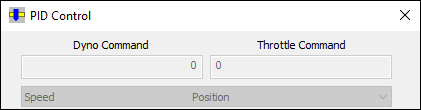
Manual Mode
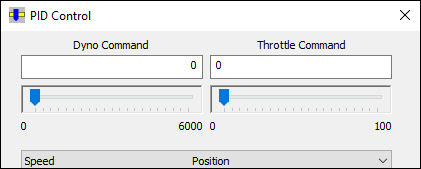
The channel setpoints are controlled by changing the sliders or typing in new digital values. These channels are defined by the control loop configuration.
The high and low EU ranges cannot be exceeded by typing in values or using the slider. However, the ranges can be edited at runtime by clicking on the value. This is shown below. The range can only be scaled down. It can never be changed to exceed the maximum EU range for that PID.
Changing Setpoints
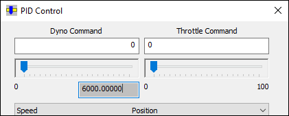
Manual ramp allows the user to enter a desired value and ramp to that value at a defined rate and is enabled by the softpanel mailslot message $RAMP or the Show Ramp Dialog menu option.
Manual Ramp Interface
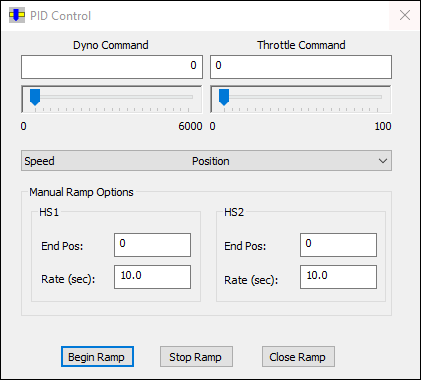
Line Rate sets the rate when controlling with the left and right arrow keys, and Page Rate controls the rate when using the page up and page down buttons to change the setpoint.
Set Sliderbar Rates
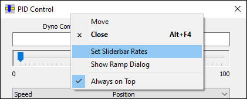
Set PID Slider Rates
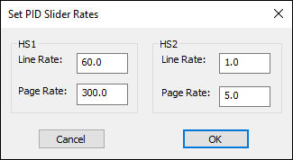
The standard modes for dyno/throttle modules are:
Spd/Pos Spd/Trq Trq/Pos Trq/Spd
There is also a Runtime Configurable mode in which the user can select the feedback channel for the throttle PID. When this is utilized, the mode set will change to the following:
Spd/Pos Spd/Trq Spd/X Trq/Pos Trq/Spd Trq/X
The X loop is added to the throttle loop group and the mode list is extended to provide 2 new mode pairs, as shown in the following screenshots:
X Mode
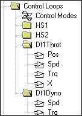
Control Modes
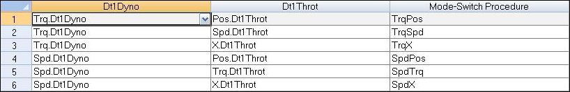
The PID Control dialog will have new modes available in the mode list, as shown below:
Select Mode
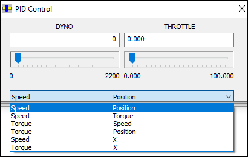
The PID Control dialog will have a new configuration dialog, accessed via the existing menu as shown below:
X Mode Configuration
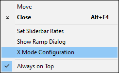
The X mode PID mode is identified by a powertek.ini setting, as shown below:
PidXMode=X.Dt1Throt
If this setting is not present in the powertek.ini, the X mode configuration menu item will not be shown in the PID Control dialog.
When the X Mode Configuration dialog is opened, the user picks the feedback value, the loop direction, the PID gains, and the setpoint limits. If the channel has been used in X mode before, the values are loaded from the new file xmode.lst. If not, default PID values and loop direction are used and the min and max setpoint values are loaded from the feedback channel’s min and max EU values.
If an X loop is selected (from PID Control), the configuration display will open but editing the configuration will not be possible.
X Mode Configuration
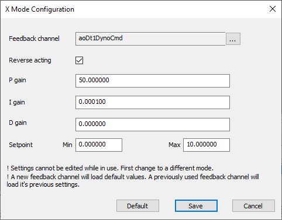
Pressing the default button resets the PID values to safe default values (P = 50, I = 0, D = 0). Optionally, you can override the defaults by putting the following INI options in powertek.ini:
PidXModeDefaultP=50 PidXModeDefaultI=0 PidXModeDefaultD=0
Pressing the Save button writes the changes to the mode file defined as the X mode file in powertek.ini, and writes the new values to the file xmode.lst. In addition, you can hook a procedure to get called when the Save button is pressed. Set the option PIDXModeSaveProcedure to the name of the procedure you would like to run when this button is pressed.